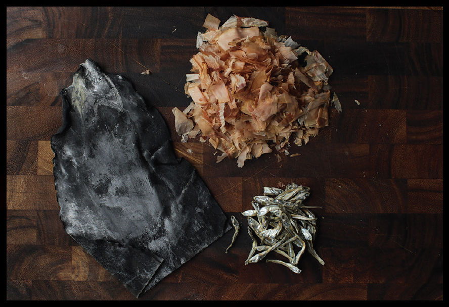
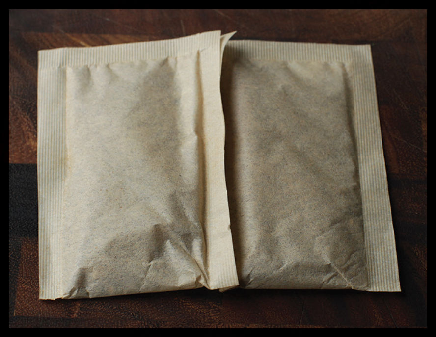
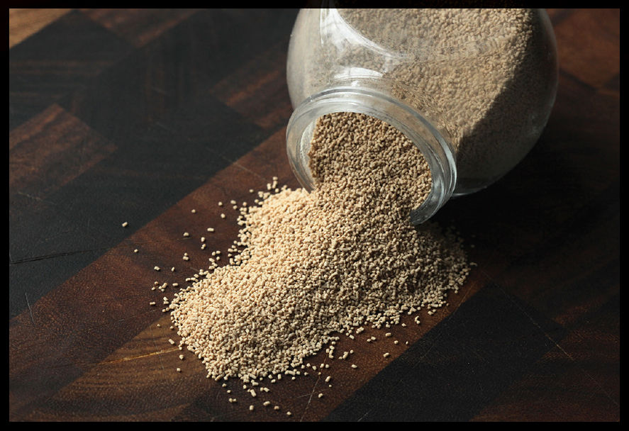
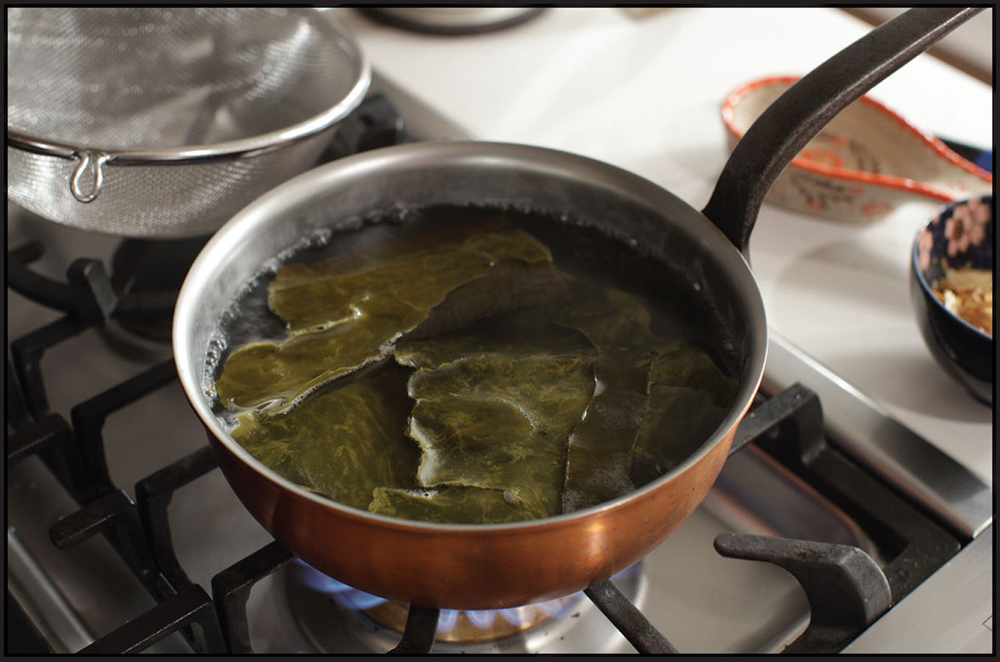

Basic Stocks
It feels silly to offer recipes for stock that call for very precise amounts of chicken carcasses or a weighed-out piece of kombu. It feels like giving someone the formula for the perfect bubble bath, or returning the potpourri because the ratio of rose petals to pinecones isn’t exactly right.
The truth is, unless you are working at a restaurant where consistency from batch to batch is key, exact measurements are really not important. Stock really should be thought of as a way to use up scraps—the leftover chicken carcass or the scallions languishing in the vegetable drawer. When I make stock at home, I eyeball everything and make use of what I’ve got. I’ll freeze chicken carcasses, spare leg bones, wing tips, and necks until I’ve got a gallon bag full of them, then I’ll throw them into a pot and start making stock. If I’ve got some scallions and ginger on hand, I might go with a simple Chinese-style stock, throwing in a ham bone or some slices of bacon for cured pork flavor if I’m feeling in the mood. If I’ve got shrimp shells leftover from a batch of shrimp and pork dumplings, maybe my hot and sour soup will get a little hit of shrimp flavor this time. If I happened to have been out picking mandarins from the garden, I might grab a few mandarin leaves and add them to my tom yam.
The point is, you can follow recipes for stock, but please, do not let a recipe restrict you from improvising or making do with what you’ve got on hand.
More complex stocks are best made in bulk, as the cooking time and effort is nearly the same whether you’re making a quart or a gallon. Excess stock can be frozen flat in zipper-lock bags (see here). Once they are frozen, you can break off however much you need for a given recipe and return the rest to the freezer.
DASHI: THE WORLD’S SIMPLEST STOCK IS LIQUID UMAMI
More than soy sauce, more than sake, more than miso, it’s dashi, a simple seaweed-based stock, that is the essential flavor of Japanese cuisine. It’s used in soups, sauces, and dips. It’s used for simmering vegetables and braising meat. If you’ve eaten any Japanese food, whether it’s a simple cup of miso soup, a hearty bowl of ramen, or a multicourse omakase menu at a sushi restaurant, you’ve tasted dashi.
And here’s the good news: It’s incredibly easy to make. You will, of course, run into folks who insist that perfecting dashi is an art, or that only the most devoted cooks who have apprenticed for decades under a master can understand what true dashi is. It’s OK if they want to believe that. Were my grandmother still alive, she’d giggle at the thought of something so simple being taken so seriously.
We call dashi “stock,” but unlike most stocks, dashi is quick. It’s very much like brewing a cup of tea, and just like tea, it’s finished in a matter of minutes.
The most common dashi is made from two ingredients: kombu (giant sea kelp) and katsuobushi (smoked, dried bonito). Sometimes other ingredients, such as niboshi (small dried sardines) or dried shiitake mushrooms can be added to the mix as well, and a simple stock made with just kombu and shiitake mushrooms makes an excellent vegan dashi that can be used just like regular dashi.
You may notice a common theme among all the dashi ingredients: umami. Kombu is rich in the umami-triggering compound glutamic acid. And, in fact, kombu was the primary source of commercial monosodium glutamate (MSG) production until modern methods of synthesis were developed (see “The Truth about MSG,” here for more about it). Dried bonito and sardines contain inosinates, while mushrooms contain guanylates, two more organic compounds that enhance the umami effect of glutamic acid, making them several times more effective.
Like saltiness, umaminess is a flavor enhancer. Dishes cooked with or in dashi have a uniquely savory, satisfying quality.
Shopping for Basic Dashi Ingredients
Process-wise, dashi is one of the least intimidating recipes out there. The ingredients might throw you off, however. When I was growing up, finding kombu and katsuobushi meant a trip to the Japanese supermarket. These days I’ve seen both ingredients at well-stocked Western supermarkets, and certainly they’re widely available online.
Kombu comes in a few varieties. I generally look for hidaka kombu, which is dark green to black in color, about 3 inches wide, with very lightly curled edges. It’s usually the cheapest one at the store. It’s also the most versatile, becoming tender and pliable when cooked, which means that after making dashi you can continue to cook it down to make kombu tsukudani (here), a rice topping that packs an intense umami punch.
Other common kombu varieties are:
•Rishiri kombu, which is dark brown in color with heavily ruffled edges and makes a strongly flavored, saline broth
•Rausu kombu, which has thin, wide fronds and plenty of powdery mineral deposits. It’s great for making dashi, though it’s usually a little pricier than Hidaka kombu and not as versatile for cooking.
•Ma kombu, sometimes referred to as the “king of kombu,” it is the most subtle of the lot, producing very clear, lightly sweet and saline dashi. It commands a high price.
Katsuobushi is fermented, smoked, and dried bonito. In block form it resembles a solid block of wood and is one of the most well-preserved foods in the world. I remember discovering a block of katsuobushi in a forgotten drawer at Uni in Boston. I asked Ken Oringer, the chef, how long it had been there, and he told me it had been in that drawer since opening day, a good four years previous. It felt just like a fresh block (though by that point, its flavor and aroma had deteriorated).
If you want to get super fancy, you can find these solid blocks at specialty shops or online retailers and shave it yourself on a specialized wooden box. You’ll find katsuobushi ranging from the simplest arabushi style, which is aged for about a month and has a dark brown, wood-like appearance, to the pricier honkarebushi style, which is dried, then sprayed with a mist of Aspergillus glaucus, a mold that gives it a deeper umami flavor and a brown, powdery rind.
In my grandmother’s time it was common for katsuobushi to be shaved fresh for cooking. These days not many people in your average Japanese household do this. Instead, they buy katsuobushi preshaved from the supermarket. Here you’ll find a wider variety of options than for kombu, and once again, the cheaper stuff is what you want when making dashi. Stock-grade katsuobushi will come in large shavings about the size of rabbit bedding. I buy mine in large plastic bags of between 3 and 4 ounces.

The much finer katsuobushi, about the size and shape of slender pencil shavings, and generally with a paler pink color, is used to garnish dishes. A small pinch of fine-shaved katsuobushi is a classic topping for a cold spinach salad dressed in dashi (ohitashi) or on top of a block of silken tofu that’s been drizzled with shoyu, one of my favorite snacks growing up (and now one of Alicia’s favorite snacks as well). I keep both stock- and topping-grade katsuobushi in my pantry.
Once a package is opened, it can be stored in a sealed container in a dark pantry for a few months, or in the freezer for up to a year.
Niboshi are small dried sardines. They can add an extra-strong boost of guanylates to dashi, enhancing its umami flavor. Typically the head and guts of niboshi are removed before making the stock, as they can have an unpleasantly fishy aroma. I rarely add niboshi to dashi, and when I do, I generally don’t bother with gutting them either. That fishy aroma is a conscious decision. If you’re interested in experimenting with niboshi, open up a packet and sniff the bag. If they smell delicious to you, you’ll probably enjoy them in your dashi as well.
Instant Dashi
The fastest, easiest way to get passable dashi in your kitchen is to simply use Hondashi, a dry granulated form of dashi made by the Aji-No-Moto company. Is it the most subtle, delectable dashi in the world? Not by a long shot. Will it do in dishes where you mix it with soy sauce and mirin or use it to simmer more robustly flavored ingredients? Absolutely. Tasted side by side, miso soup made with Hondashi will taste flat and one-dimensional compared to real dashi, but even one-dimensional miso soup is delicious and satisfying.†
To be honest, I use powdered Hondashi more frequently than I make dashi from scratch.
The other useful form of instant dashi is in premixed infusions. These are essentially tea bags that, instead of tea, contain premixed dashi ingredients. Most frequently it’s a combination of kombu, katsuobushi, shiitake mushroom, and niboshi or urume (another type of dried sardine-like fish). You steep them in hot water exactly like tea, and a few minutes later you’ve got excellent dashi, ready to go. You’ll find these stocked next to the Hondashi at the Japanese supermarket or from online retailers.

Ichiban and Niban Dashi
The two major types of dashi are ichiban-dashi—or first dashi—and niban-dashi—second dashi. Ichiban dashi is the first extraction of kombu and katsuobshi, and it’s used primarily in restaurants. The idea is to use a great deal of kombu and bonito, steeped at a relatively low temperature. By doing so, you develop a light broth without extracting many of the heavier, stronger flavors. At the same time, by not allowing the liquid to simmer, you get stock that is crystal clear and suitable for clear, lightly garnished soups (suimono) that form an essential part of a traditional multicourse Japanese meal. It’s also not something most folks bother with at home (I certainly don’t).

Niban dashi is made by taking the spent bonito flakes and kombu from the first dashi, covering it with more water, then simmering it for a longer period of time—ten minutes or so is normal—to extract what’s left of the flavor. What results is a much more intense, slightly cloudy, smoky, briny broth. In restaurants this broth is suitable for making sauce, braising meats, simmering vegetables, and other uses where it’s a base flavor for other ingredients.
From a half ounce of kombu and a half ounce of dried bonito flakes, you end up with about a quart each of ichiban and niban dashi.
Alternatively, you can do what I do: skip the ichiban dashi and just make lightly simmered dashi from the get-go. You end up with about a quart and a half of dashi that is heavier than ichiban dashi, but more complex in flavor than niban dashi. It’s ideal for home use.
How to Make Dashi
There is much debate over how to properly make dashi. At the sashimi bar I used to work at, we made our ichiban dashi by placing kombu in cold water in the morning, letting it steep until the early afternoon, then bringing the water to a bare simmer, removing it from the heat, adding our katsuobushi, letting that steep for five minutes, then straining everything out. (We’d then further simmer the kombu and katsuobushi for niban dashi, or, frequently, until the kombu was tender enough to thinly slice and use as a garnish for a number of dishes.)
The idea is that when simmered, kombu will impart a few mildly bitter flavors that can upset delicate palates. I’ve never had a problem with it. Katsuobushi definitely tastes different depending on whether it’s been steeped, simmered, or boiled. Steeped, you get a very light, smoky, umami flavor. Simmered, it starts to pick up some lightly fishy flavors with a hint of sourness. Boil it for any period of time, and you end up with a noticeably sour, fishy broth. I don’t recommend boiling katsuobushi.

For my homemade dashi, I take a simple approach: I combine the kombu and water, bring it to a bare simmer, let it simmer for five minutes, add the katsuobushi off heat, steep for five more minutes, then strain it off for use. If I’m feeling extra ambitious, I’ll let the kombu steep in the cold water for longer before heating it up (even overnight on the countertop at room temperature will work).
*Alright, I confess, there’s a reason those events were particularly memorable. That icy day on the Gallatin was the first time my wife, Adri, had ever tried fly fishing. After 45 minutes standing thigh-high in ice water in rented waders, she called it quits. I helped her out of her waders only to discover that they had a hole in them and that icy water had been sloshing around her legs the entire time; I asked her why she hadn’t said anything, and she said, “I thought it was normal. I didn’t want to seem like a wimp!” As for the bologna incident, we weren’t just eating it; we were eating eye and nose holes into the slices, laying them over our faces, and calling each other bolognaface, as you do.
†It’s especially good for hangovers!